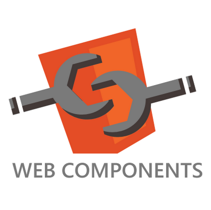

The Future of The Web Platform
and some recent features
August 2013
Presented by
Mitko Bonev Senior developer in the StageIt team
Software Setup
-
Chrome Canary


- bleeding-edge build
- runs side-by-side with your other Chrome installation

-
Chrome flags turned on
- experimental Web Platform features
- Developer Tools experiments
High-precision timers
Timer Specifications
-
User Timing - measures js code performance
PerformanceMark- named timestamp since navigationStartPerformanceMeasure- named duration between two marks
-
Navigation Timing - measures page navigation
PerformanceNavigation- type of page navigationPerformanceTiming- page navigation timestamps
-
Resource Timing - measures resources timings
PerformanceResourceTiming- resource initiator and timestamps
<dialog> Element
Dialog Features
- Centered in the Viewport
- Can be Modal
- Always on Top
- Anchored to Element (optional)
- Return value on close (optional)
Responsive images

Content and style images
-
<picture>element - browser follows author's intentions -
<img srcset>attribute - author hints the browser's choice -
image-set()- similar tosrcsetbut for style images
Web Components
HTML Templates - <template> element
- the template's content is parsed to DOM
- the template's DOM is not part of document's DOM tree
-
contentproperty holds the template's DOM -
template's DOM is activated by appending it to the document's DOM
- scripts are executed
- images are fetched
Custom HTML Elements - <element> element
-
has
nameand optionallyextendsa supertype - optionally define a JS API
-
lifecycle callbacks
-
readyCallback- is created -
insertedCallback- is inserted into a document -
removedCallback- is removed from a document
-
- can be defined in script as an alternative to markup
Shadow DOM
- a DOM tree separate from the document DOM
- attached to an element - a shadow host
- gets rendered instead of the host's DOM
-
can render host's DOM at specified
<content>points -
can render other host shadow trees at specified
<shadow>points - by default blocks author styles except for the inherited ones
- can style the host and the inserted content
- can allow an element or certain props to be styled
- events that escape the shadow are retargeted to host
Thank You!
slides: github.com/dsbonev/web-platform-features-presentation